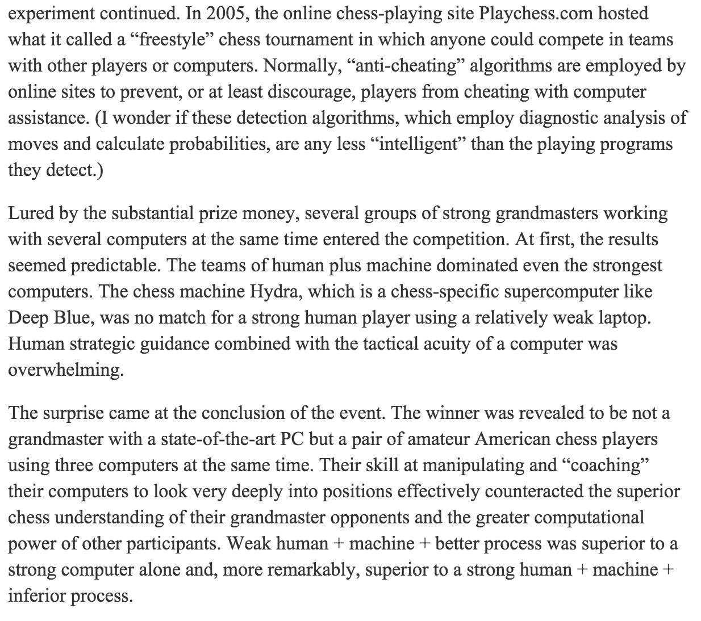
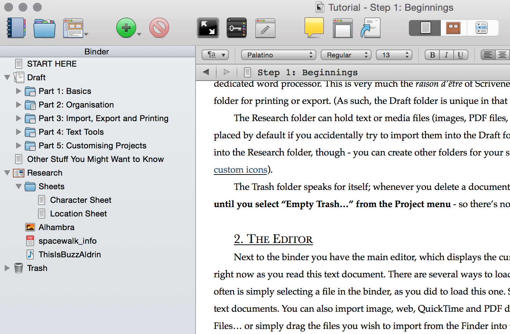

Engelbart: "Augmenting Human Intellect"

 “By "augmenting human intellect" we mean increasing the
capability of a man to approach a complex problem situation,
to gain comprehension to suit his particular needs, and to
derive solutions to problems… whether the problem
situation exists for twenty minutes or twenty years. We do not
speak of isolated clever tricks that help in particular
situations. We refer to a way of life in an integrated domain
where hunches, cut-and-try, intangibles, and the human "feel
for a situation" usefully co-exist with powerful concepts,
streamlined terminology and notation, sophisticated methods,
and high-powered electronic aids. ”
“By "augmenting human intellect" we mean increasing the
capability of a man to approach a complex problem situation,
to gain comprehension to suit his particular needs, and to
derive solutions to problems… whether the problem
situation exists for twenty minutes or twenty years. We do not
speak of isolated clever tricks that help in particular
situations. We refer to a way of life in an integrated domain
where hunches, cut-and-try, intangibles, and the human "feel
for a situation" usefully co-exist with powerful concepts,
streamlined terminology and notation, sophisticated methods,
and high-powered electronic aids. ”
Source
text for Engelbart's paper on “Augmenting Human
Intellect”.
Slides by Michael
Nielsen, for a small-group discussion with people from the
Recurse Center, August 10,
2015. The slides should be regarded as brief, rough and
very(!) incomplete working notes on a tiny slice of
Engelbart's paper.
Augmenting intellect with paper and pencil
What is 427 x 784?
Hard for an unaided human.
Even harder: what is 721,269,127 x 422,599,421?
Both problems become easy with paper and pencil.
This is strange, a priori: wood pulp + wood +
graphite = more intellectual capability!
We're used to this, but that doesn't
mean we understand it. What's actually going on? For what
class of problems does paper and pencil help? For what class
of problems does it not help (or hinder)? How much can it
help?
Advanced chess
Garry
Kasparov, writing in the 2010 New York Review of
Books:

Questions
Is there a theory of how humans and machines work together?
Or, at the least, some general principles governing behaviour?
Can we find principles that will help us design more powerful
human-machine systems?
Engelbart's paper sketches out a research program that aims
toward – very roughly speaking – these ends.
Because the paper is a sketch it is often highly speculative,
and sometimes rather vague. It's more a cool-headed manifesto
than a typical paper. We won't attempt to grok the whole
thing – indeed, I certainly don't grok the whole thing.
Instead, we'll focus narrowly, and try to begin understanding
a few of the deep ideas.
In other words, I'm riffing on the paper, drawing connections
to other work, and asking questions. Please jump in!
Problem solving as symbol structuring
Writing a book is the art of “sitting down and putting a
hundred thousand words in a cunning order” (Douglas
Adams)
Engelbart viewed augmentation as being to a great extent about
developing new ways of manipulating and structuring symbols:
“One way of viewing the H-LAM/T system changes that we
contemplate--specifically, integrating the capabilities of a
digital computer into the intellectual activity of individual
humans--is that we are introducing new and extremely advanced
means for externally manipulating symbols. We then want to
determine the useful modifications in the language and in the
way of thinking that could result.”
Examples of systems for structuring symbols: the
multiplication algorithm, diary, calendar, GTD, org-mode,
outlining tool, Word, Emacs, etc.
Scrivener

Scrivener is a popular outlining tool used by writers.
I suspect much of its popularity is due to one piece
of symbol structuring it does: a clear, built-in division
between research notes and draft material, making it easy to
jump back and forth.
The creators of Scrivener have taken a process that
formerly had to be done manually by writers, and built a
system of cues that make it easy and natural.
It's not difficult for a writer with the right habits to do
this manually. But Scrivener makes it hard to avoid,
providing all the right cues at the right moments.
In other words it provides an environment for the simple
process stuff done by experts.
Capabilities
Engelbart divides our (augmented) problem-solving capabilities
up:
- Basic capabilities;
- The repertoire hierarchy of capabilities, built up from
the basic capabilities.
This division is a very clever move.
It's tempting to focus primarily on changes to basic
capabilities. Many of those changes will appear
trivial.
By also concentrating on the repertoire hierarchy as an
important object of study, we are alerted to the fact that
even a tiny change to basic capabilities
may propagate through the repertoire hierarchy to
cause major changes in effective intellect.
Scrivener's division into research and draft is only
a small addition to the basic capabilities. But it propagates
all through the writing process to cause a major change in
results.
Questions
What are some other examples of small changes in basic
capabilities that cause large changes in the repertoire
hierarchy?
In particular, can we think of really small changes that give
rise to huge changes in the reportoire hierarchy?
Possible sources of inspiration may come from: Emacs, Word,
GTD, diary, your favourite programming language, etc.
Can we think of characteristics that mean a small change will
have an especially large impact?
The impact of our means of manipulating symbols
“The Whorfian hypothesis states that the world view of a
culture is limited by the structure of the language which that
culture uses. But there seems to be another factor to consider
in the evolution of language and human reasoning ability. We
offer the following hypothesis, which is related to the
Whorfian hypothesis: Both the language used by a culture, and
the capability for effective intellectual activity are
directly affected during their evolution by the means by which
individuals control the external manipulation of
symbols.”
Ken Perlin's widgets
Play from 47:10 through
53:05.
Original source.
Symbols are no longer static. They're dynamic, interactive.
They have both a user interface and the ability to interact with
one another. If the symbols are well-designed, there is the
potential for emergent, collective behaviour, and new forms of
meaning (as with language). Giving more powerful means of
expresion changes the basic capabilities, and, if well chosen,
this may affect the entire repertoire hierarchy.
Questions
What other examples are there of introducing new symbols for
expresing thought?
What makes a new symbol particularly powerful? What makes a
new symbol weak?
What would be some fun things to prototype?
What's missing from Engelbart's paper?
He views problem solving as being all about information
handling: symbol structuring.
But there is a very large – maybe primary – factor,
which is emotional involvement.
Someone deeply committed with bad tools is often much more
effective than someone uncommitted who has great tools.
How can we use computers to change people's emotional
experience?
Papert's Mindstorms
is pretty good on this.
Notes
The following rough notes were made by participants in the
discussion:
/